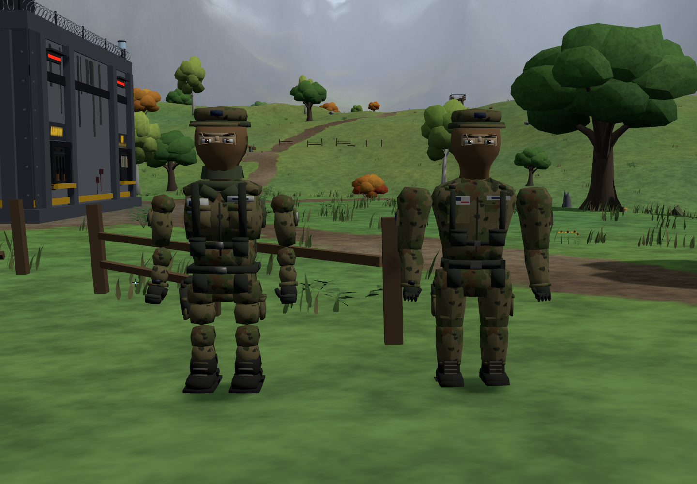

Same soldier. A more connected, fitted silhouette.
First pass · Ready to inspect
Original bodyRebuilt body

Continuous limbs, a tapered torso, a lower collar, and more defined hands and boots.
The new body is used in the game. Hats, balaclava, camo, armor, rolled sleeves, shorts and gloves still use the existing clothing options. The previous body remains available for comparison.